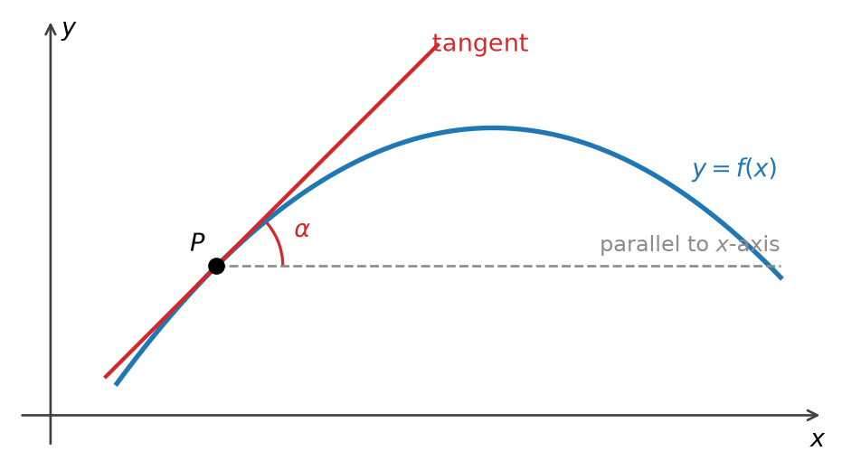
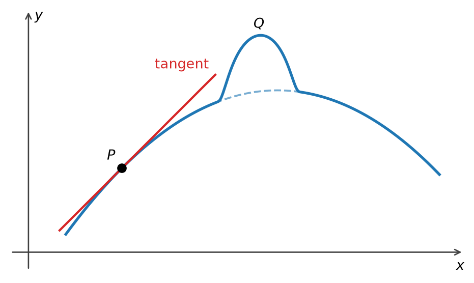
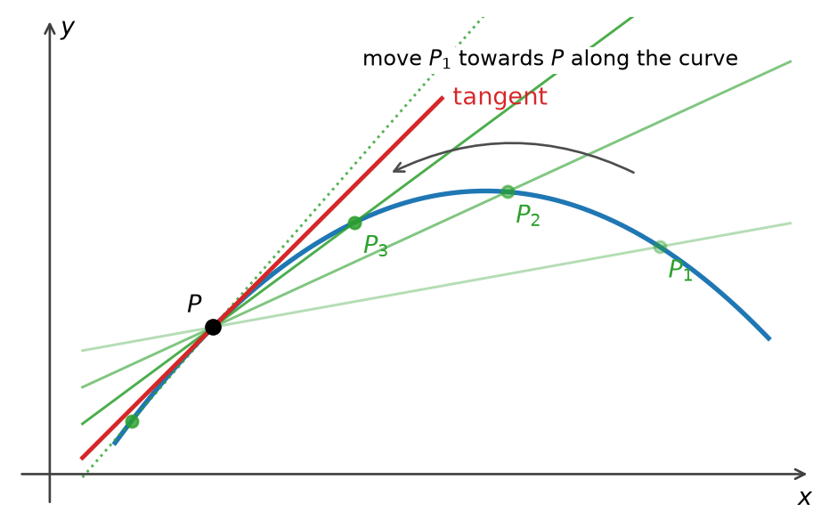
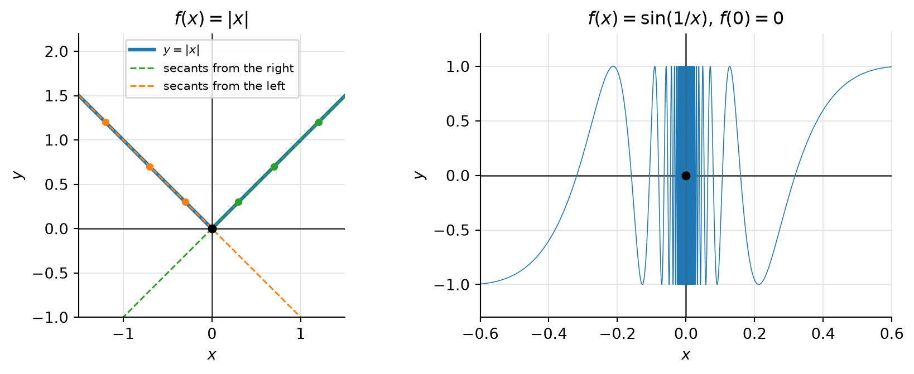
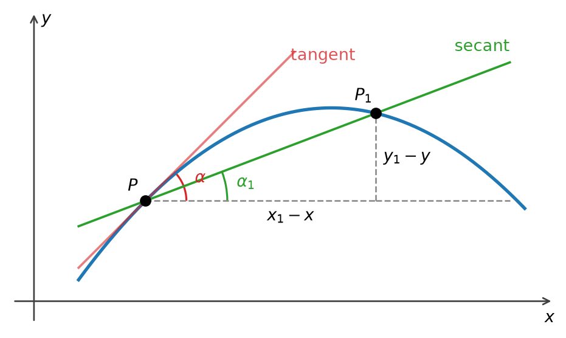
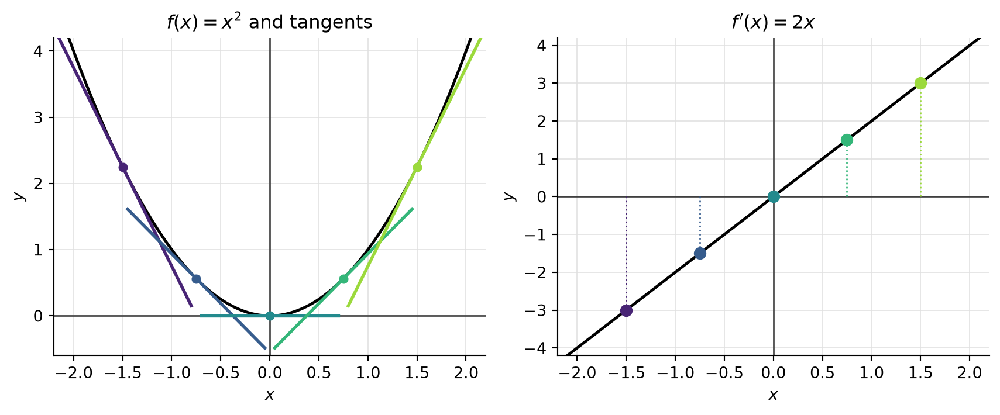
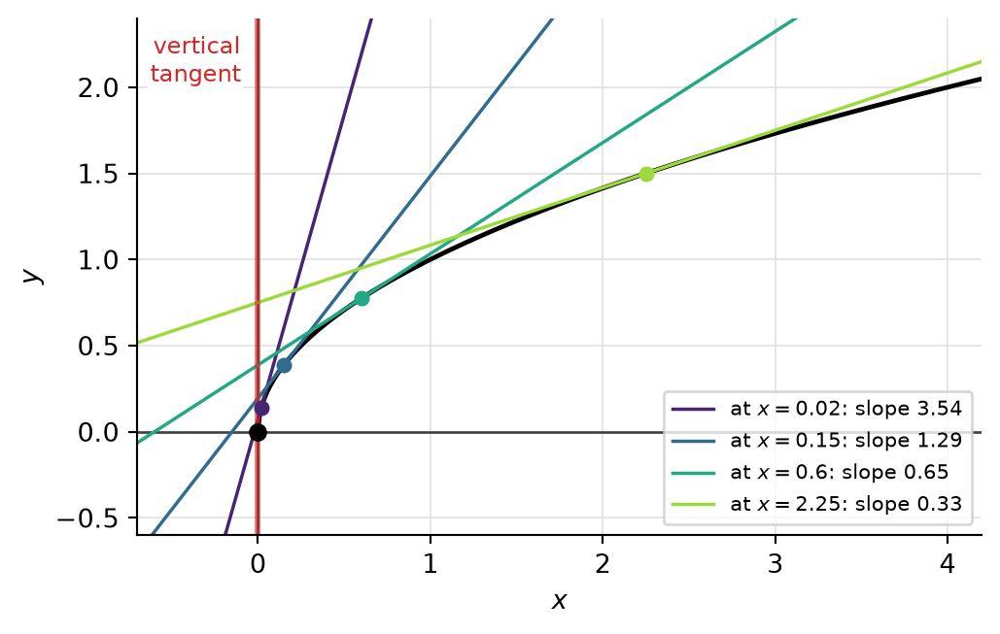

15 The Derivative
15.1 The Tangent Problem
How should we define the tangent to a given curve \(y=f(x)\) at a point \(P\) on the curve? Intuitively, the tangent is the line through \(P\) that points in the direction in which the curve is heading at \(P\). Since every candidate line passes through \(P\), a line is completely characterized by its direction: the angle \(\alpha\) it makes with the line through \(P\) parallel to the \(x\)-axis, measured counterclockwise (Figure 15.1).
Two observations guide the definition.
- Knowing the point \(P=(x,f(x))\) alone does not determine the tangent: infinitely many lines pass through \(P\). We need to know the curve at other points, too.
- On the other hand, only the points very, very close — “infinitesimally close” — to \(P\) have an influence on the tangent. At any point \(Q\neq P\) we can change the curve without changing the tangent at \(P\), as long as we leave the curve alone in some small neighborhood of \(P\) (Figure 15.2).

Together, these observations suggest that the tangent should be defined via a limiting process.
15.2 Secants
A secant is a line through \(P\) and a second point \(P_1\) of the curve. Unlike the tangent, a secant is easy to describe, since it is determined by two points. Now move \(P_1\) towards \(P\) along the curve. As \(P_1\) approaches \(P\), the secant should approach the tangent (Figure 15.3): \[ \text{secant} \longrightarrow \text{tangent}. \]

This picture rests on an assumption: that the secants actually settle down to a definite limiting position, and that this position is independent of the side from which \(P_1\) approaches \(P\). In other words, we are assuming that the tangent exists. This is a strong assumption, and it need not be true.

NoteSolution
Solution. No. The secant through \(P\) and \(P_1=\big(x_1,\sin(1/x_1)\big)\) has slope \(\sin(1/x_1)/x_1\).
- For \(x_1 = \dfrac{1}{n\pi}\) the slope is \(0\): the secant is the \(x\)-axis.
- For \(x_1 = \dfrac{1}{2\pi n+\pi/2}\) the slope is \(2\pi n + \pi/2\), which grows without bound: these secants become steeper and steeper.
Points of both kinds come arbitrarily close to \(P\) as \(n\to\infty\), so the secants do not settle down to any single limiting position. (In fact \(f\) is not even continuous at \(0\), so the graph does not pass through \(P\) in any reasonable sense.)
Damping the oscillation does not help. For \(g(x)=x\sin(1/x)\), \(g(0)=0\), which is continuous at \(0\) (Example 6.4), the secant through \((0,0)\) and \(\big(x_1,g(x_1)\big)\) has slope \(\sin(1/x_1)\), which keeps oscillating between \(-1\) and \(1\) as \(x_1\to0\). So continuity alone does not guarantee a tangent.
15.3 From Angles to Slopes
If the tangent at \(P\) exists, how do we formulate it analytically, that is, in terms of \(f\)? We use angles. Let \(\alpha_1\) be the angle between the line through \(P\) parallel to the \(x\)-axis and the secant \(PP_1\), again measured counterclockwise (Figure 15.5). Informally, \[ \lim_{P_1\to P}\alpha_1 = \alpha . \]

Write \(P=(x,y)\) and \(P_1=(x_1,y_1)\), where \(y=f(x)\) and \(y_1=f(x_1)\). The secant is the hypotenuse of a right triangle with horizontal leg \(x_1-x\) and vertical leg \(y_1-y\), so by trigonometry \[ \tan(\alpha_1) = \frac{y_1-y}{x_1-x} = \frac{f(x_1)-f(x)}{x_1-x}. \] (If \(x_1<x\), both the numerator and the denominator change sign, and the formula remains valid.) Hence we can express the limiting process of finding the tangent at \(P\) as \[ \lim_{x_1\to x} \frac{f(x_1)-f(x)}{x_1-x} = \lim_{x_1\to x}\tan(\alpha_1) = \tan(\alpha). \]
15.4 The Derivative
The tangent to \(y=f(x)\) at \(P=(x,f(x))\) is then the line through \(P\) with slope \(f'(x)\), that is, the graph of \(t\mapsto f(x)+f'(x)\,(t-x)\).
Notation. There are two common notations for the derivative: \[ f'(x) \quad \text{(Lagrange)}, \qquad\qquad \frac{df(x)}{dx} \quad\text{or}\quad \frac{d}{dx}f(x) \quad \text{(Leibniz)}. \] If \(y=f(x)\), one also writes \(y'\) or \(\dfrac{dy}{dx}\). Leibniz’s notation is meant to recall the difference quotient \(\frac{\Delta y}{\Delta x}\), as a quotient of “infinitely small” differences. For us, however, \(\frac{dy}{dx}\) is a single symbol standing for the limit in Definition 15.2, not a quotient of two numbers \(dy\) and \(dx\).
Substituting \(x_1 = x+h\) gives an alternative form of the difference quotient, which is often more convenient for calculations: \[ f'(x) = \lim_{h\to0}\frac{f(x+h)-f(x)}{h}. \] The two limits are the same: sequences \(x_n\to x\) with \(x_n\neq x\) correspond exactly to sequences \(h_n = x_n - x\to 0\) with \(h_n\neq0\), and the corresponding difference quotients agree term by term. In the notation of Definition 15.1, \(h=\Delta x\).
15.5 Examples


15.6 Summary
- The tangent to \(y=f(x)\) at \(P\) is determined by its angle with the horizontal. That angle cannot be read off from \(P\) alone, but it depends only on the curve arbitrarily close to \(P\). This calls for a limiting process (Figure 15.1, Figure 15.2).
- The tangent is the limiting position of the secants \(PP_1\) as \(P_1\to P\) along the curve, from either side (Figure 15.3). Such a limiting position need not exist: \(\lvert x \rvert\) has a corner at the origin (Example 15.1), and \(\sin(1/x)\) oscillates too wildly (Exercise 15.1).
- The slope of the secant is the difference quotient \(\frac{\Delta y}{\Delta x} = \frac{f(x_1)-f(x)}{x_1-x} = \tan(\alpha_1)\) (Definition 15.1). Working with slopes instead of angles loses nothing except vertical tangents (Remark 15.1).
- The derivative is the limit of the difference quotient, \(f'(x) = \lim_{x_1\to x}\frac{f(x_1)-f(x)}{x_1-x} = \lim_{h\to0}\frac{f(x+h)-f(x)}{h}\) (Definition 15.2), written \(f'(x)\) (Lagrange) or \(\frac{df}{dx}\) (Leibniz). It is itself a function of \(x\) (Remark 15.3).
- First examples: \((x^2)' = 2x\), \((x^3)'=3x^2\), and \((\sqrt x)' = \frac{1}{2\sqrt x}\) for \(x>0\) (Example 15.2, Example 15.3, Example 15.4). In each case the trick is to cancel the factor \(x_1-x\) (or \(h\)), which is legitimate because \(x_1\neq x\). The square root is not differentiable at \(0\), where its graph has a vertical tangent.